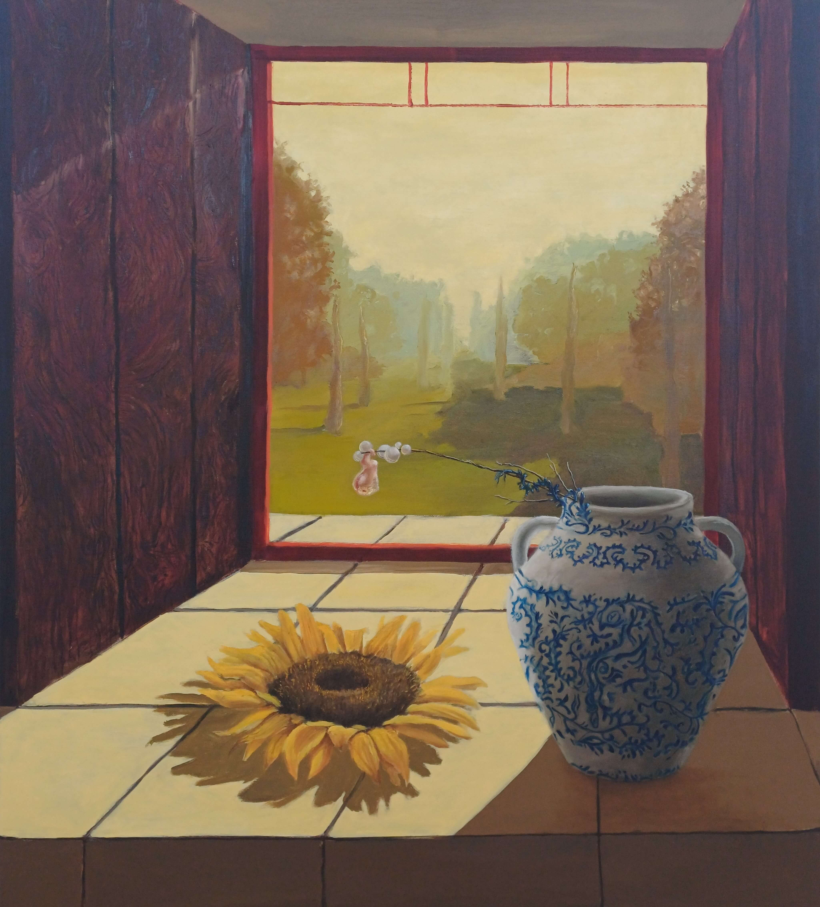
Esperança; not naïve hope, but a deep, elegant hope sustained by the weight of the memory of everything you have been through
Inquire about this piece13 works

Esperança; not naïve hope, but a deep, elegant hope sustained by the weight of the memory of everything you have been through
Inquire about this piece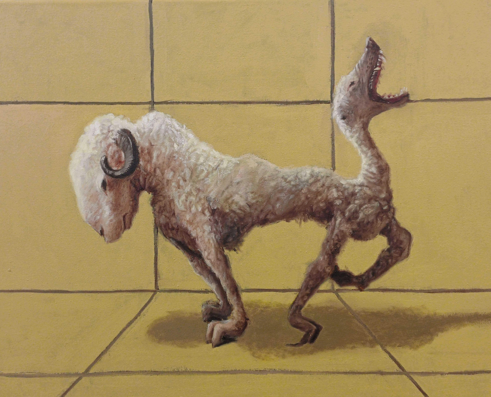
Waefre; the wavering mind that cannot settle and cannot find inner peace
Inquire about this piece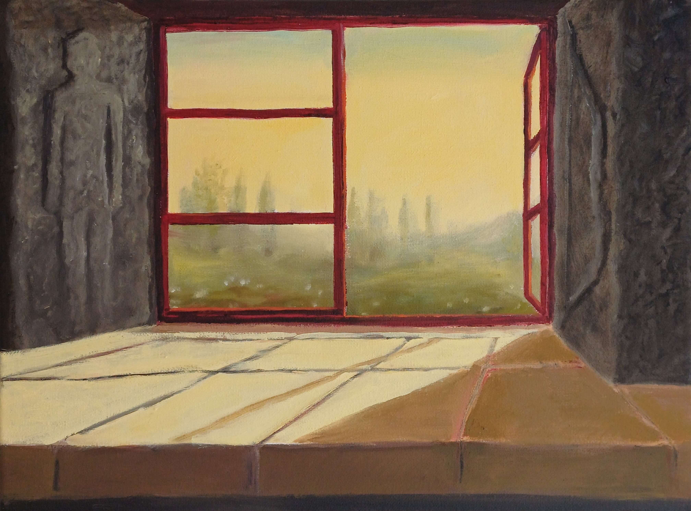
Gégaderian; the slow and careful process of mending what had been broken
Inquire about this piece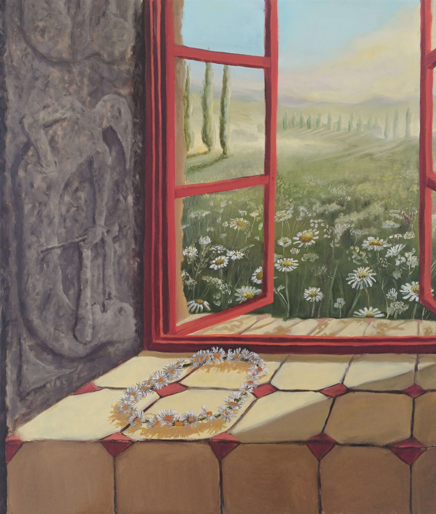
Hyht; a deep sense of hope, expectation and joyful anticipation of the future
Inquire about this piece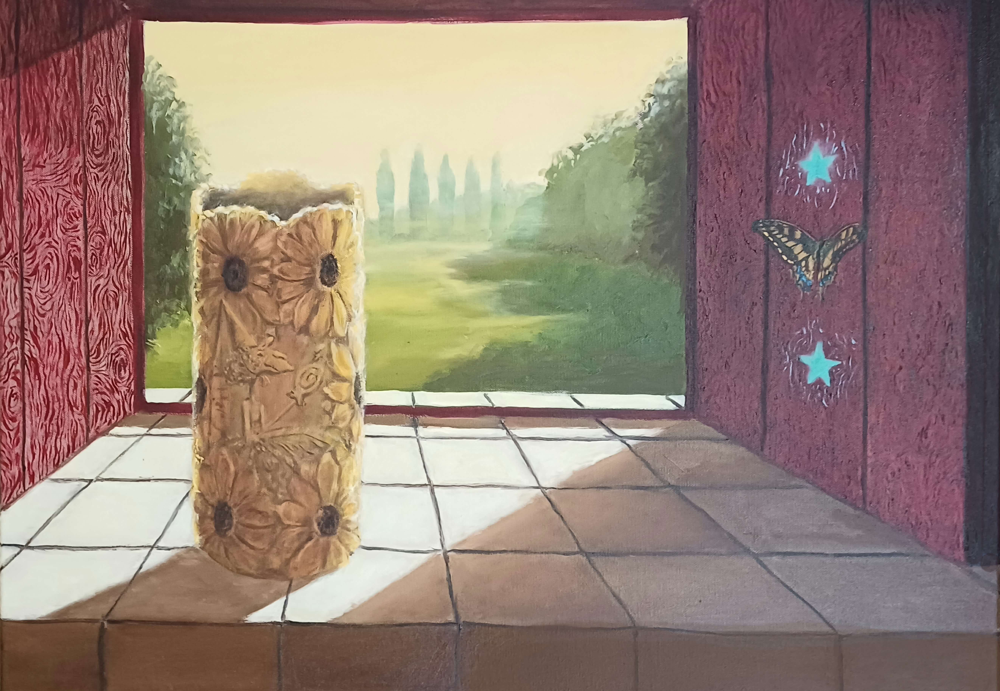
cyndnes; acting out of your natural sense of connection with another person, as if they were your family
Sold
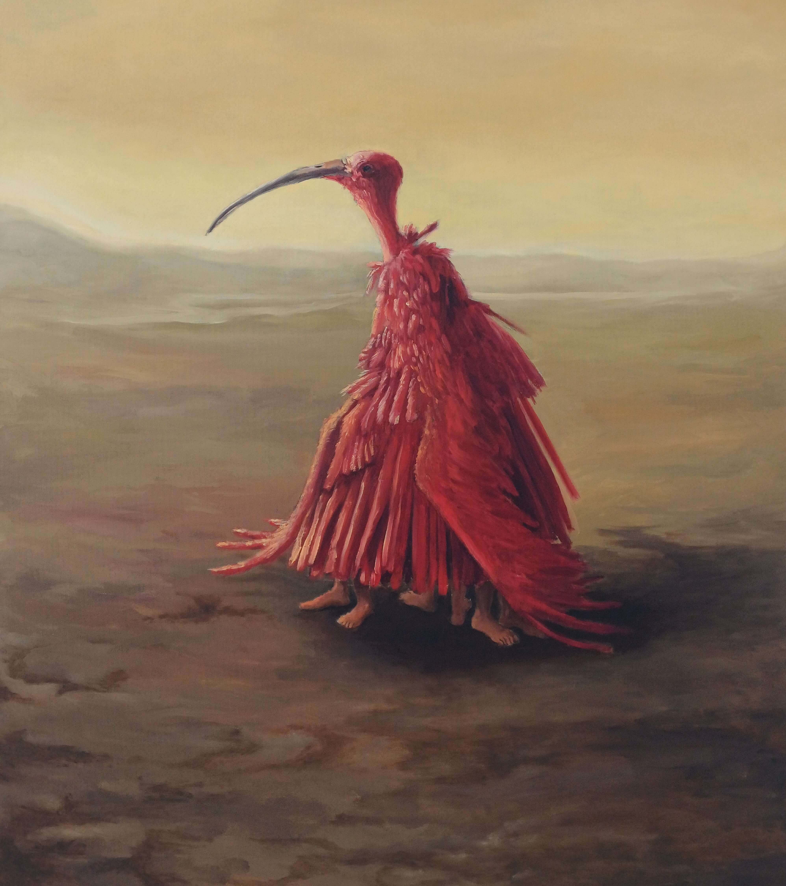
Incertitudosuperomnia; the uncertainty of everything
Inquire about this piece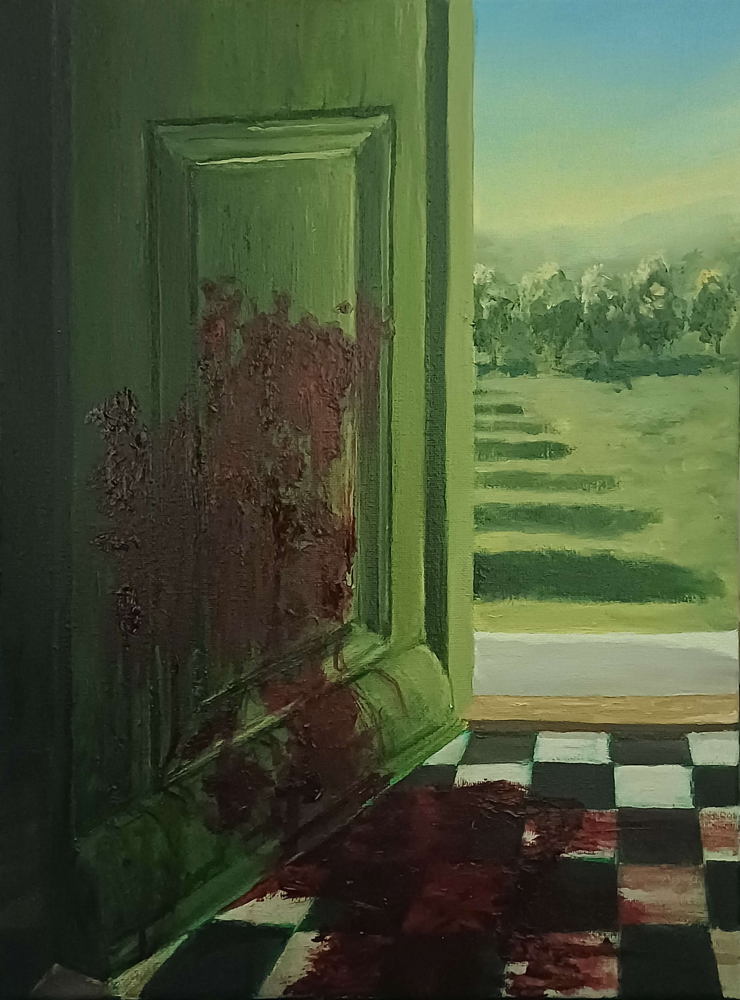
Felahrëow; a feeling of intense grief over another’s suffering
Inquire about this piece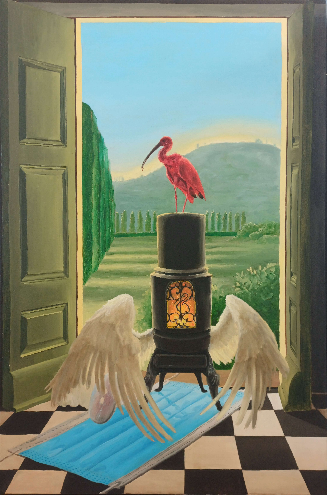
Luxperumbra; the light that continues to shine through the shadows
Inquire about this piece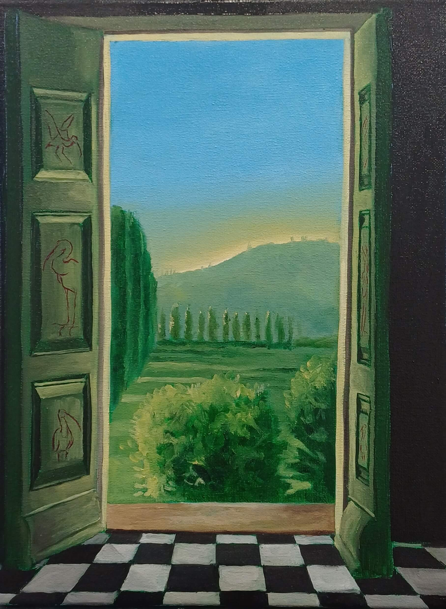
Anamnesia; a feeling the soul already knew, like a sense of home
Inquire about this piece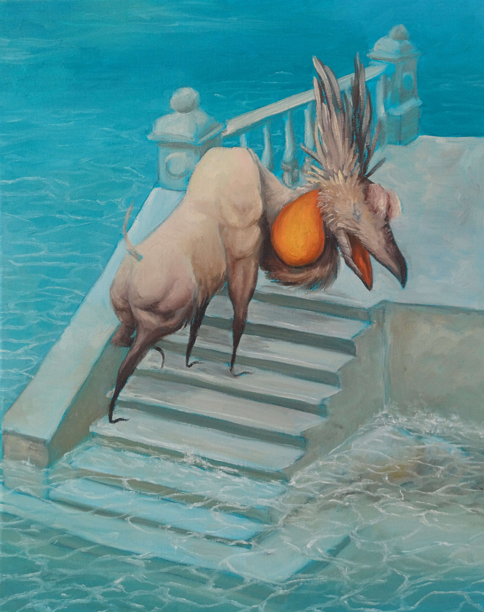
Ofermod; the arrogance that leads to ruin, oil on canvas
Inquire about this piece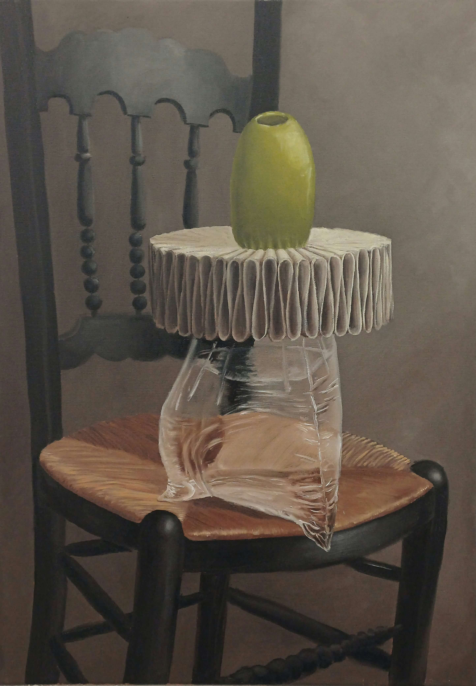
Olive On A Chair II
Inquire about this piece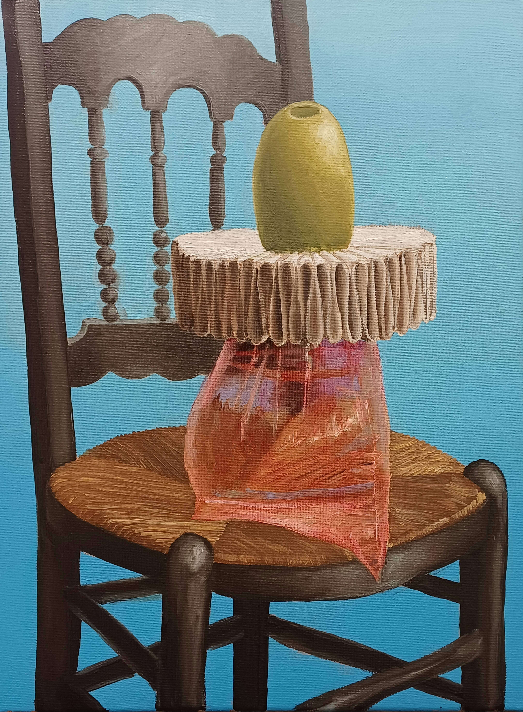
Olive On A Chair I
Inquire about this piece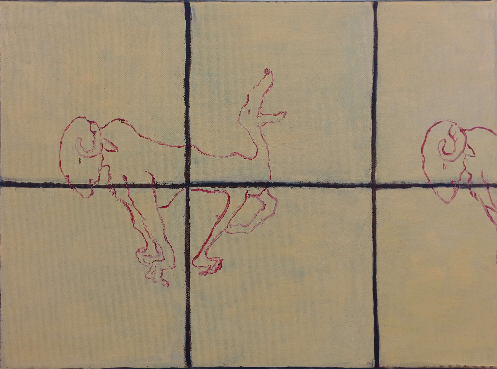
Sorglufu; the bittersweet mix of sorrow and love
Inquire about this piece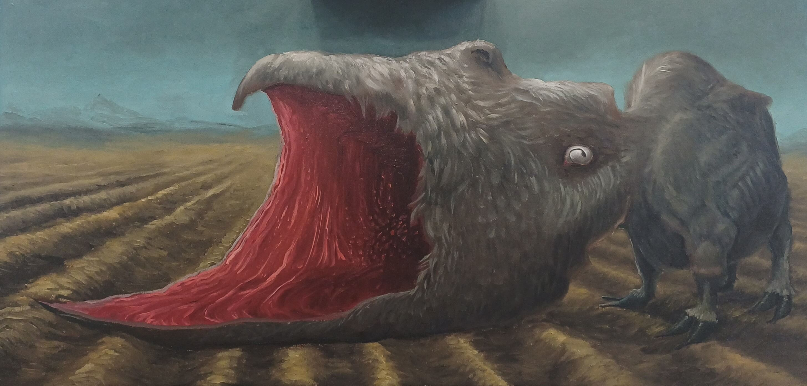
In The Mouth Of The Beast
Inquire about this piece